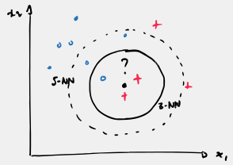
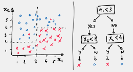
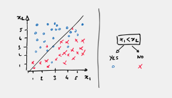
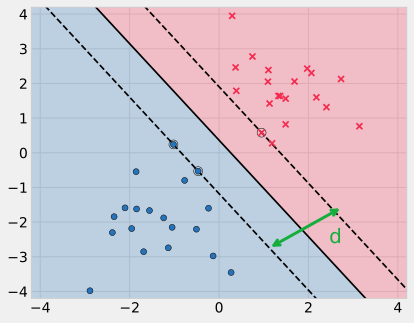
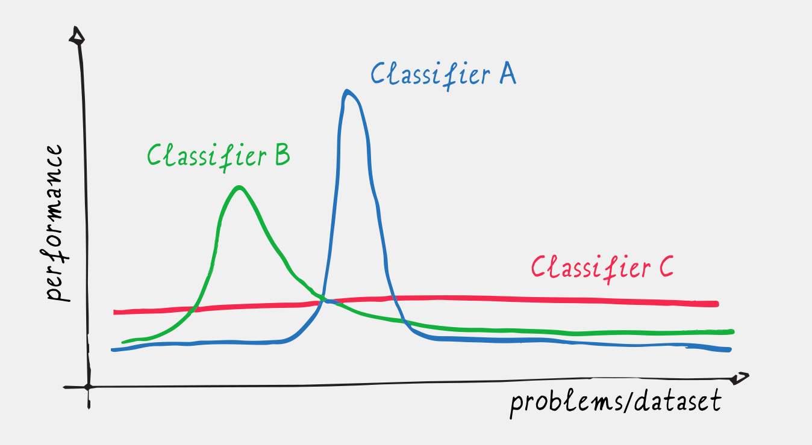
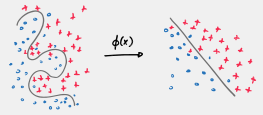
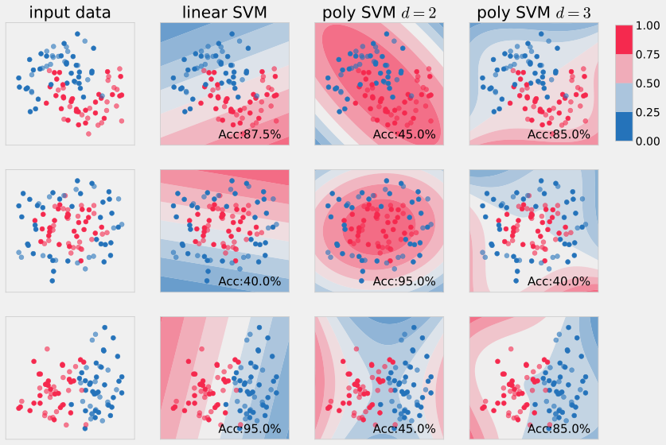

3 A Tour of Classic Classifiers
Before we delve into the world of neural networks, it is important to recognise that they are not a recent invention. For many years, other machine learning algorithms were the preferred methods for a wide range of tasks. In this chapter, we will briefly introduce some of the most influential classic supervised learning algorithms for classification.
The main theme is not simply that there are many different classifiers, but that different classifiers make different assumptions about the structure of the data. These assumptions, or inductive biases, are essential for learning from finite data. Classical machine learning often made these assumptions through the choice of features or representation; neural networks will later allow us to learn much of that representation directly from data.
Given the scope of this chapter, we will only touch upon these techniques, as some would traditionally warrant dedicated modules for in-depth study.
3.1 k-Nearest Neighbours (k-NN)
The k-nearest neighbours (k-NN) algorithm is a simple yet powerful non-parametric method. To classify a new data point, \mathbf{x}, the algorithm identifies the k closest data points in the training set (its “neighbours”). The new data point is then assigned to the class that is most common among its k neighbours. The confidence of the prediction can be expressed as the proportion of neighbours belonging to the majority class.
For example, in Figure 3.1, if we use k=3, the prediction for the new data point (with the question mark) would be the positive class (red cross) with 66.7% confidence. However, if we use k=5, the prediction would be the negative class (blue circle) with 60% confidence.

The key assumption behind k-NN is simple: nearby data points tend to have similar labels. This is an example of inductive bias based on local similarity.
Figure 3.2 shows the decision boundaries produced by k-NN for different values of k on three different datasets. The colour shading indicates the predicted probability of belonging to each class. As you can see, the decision boundaries become smoother as k increases.

Pros:
- Simple and intuitive: The algorithm is easy to understand and implement.
- Non-parametric: It makes no assumptions about a particular parametric form for the data distribution.
- Can perform well with representative training data: Since predictions are based directly on nearby examples, additional training data can improve the quality of the local neighbourhood.
Cons:
- Computationally expensive: Finding the nearest neighbours can be slow, especially with large datasets.
- Sensitive to feature scaling: Features with larger numerical ranges dominate distance metrics, making standardisation essential.
- Curse of dimensionality: In high-dimensional spaces, pairwise distances concentrate and data points become roughly equidistant, degrading predictive accuracy.
- Sensitive to small or unrepresentative datasets: The algorithm can perform poorly when there are too few examples to capture the true local structure of the data.
- No explicit decision function: The model does not learn a compact parametric rule or provide feature-importance measures directly.
3.2 Decision Trees
Decision trees (Breiman et al. 1984) and their more advanced variants, like Random Forests and AdaBoost, are another popular class of algorithms. A decision tree partitions the input space into a set of rectangular regions, following a “divide and conquer” strategy, as illustrated in Figure 3.3.

At each internal node of the tree, a decision is made based on a simple test, such as “is feature x_2 less than 3?”. This process is repeated until a leaf node is reached, which corresponds to a specific class label.
A useful way to view a decision tree is therefore as a collection of axis-aligned decisions that divide the feature space into rectangular regions.
While a single decision tree produces a class decision at each leaf, ensemble methods like AdaBoost (Freund and Schapire 1995) and Random Forests (Ho 1995) combine multiple trees to produce more flexible decision boundaries.
As shown in Figure 3.4, the decision boundaries of these models are composed of vertical and horizontal lines, aligned with the axes of the input space and corresponding to the tests performed (e.g. x_2 > 3, x_1 > 2, etc.).

Random Forests were particularly popular before the widespread adoption of neural networks due to their computational efficiency. A notable application was the real-time body part tracking in the Microsoft Kinect (Shotton et al. 2013) (see demo page).
Pros:
- Fast and efficient: Decision trees are relatively fast to train and use for prediction.
- Interpretable: The tree structure provides a clear and understandable representation of the decision-making process.
Cons:
- Axis-aligned splits: Decision trees can only create splits that are parallel to the feature axes. This can be inefficient if the true decision boundary is diagonal. For instance, the tree decomposition from Figure 3.4 would have been more efficient if we used a diagonal split with x_1 < x_2 as shown in Figure 3.5.

- AdaBoost, Random Forests.
- StatQuest: Decision Trees
3.3 Linear SVM
Until the rise of deep learning, Support Vector Machines (SVMs) were among the most widely used classification methods.
Similar to Logistic Regression, a linear SVM is a linear classifier that makes predictions based on a linear combination of the input features:
y = [ \mathbf{x}^{\top}\mathbf{w} > 0 ]
Here we use the same augmented feature-vector convention as in the previous lectures, so the bias term is included in \mathbf{x}.
The key difference between SVM and logistic regression lies in the loss function used for training.
While logistic regression uses the cross-entropy loss, SVM employs regularised hinge loss:
L_{SVM}( \mathbf{w}) = \frac{\lambda}{2} \|\mathbf{w}\|^2 + \sum_{i=1}^n \Big( [y_i=0]\max(0, 1 + \mathbf{x}_i^{\top} \mathbf{w}) + [y_i=1]\max(0, 1 - \mathbf{x}_i^{\top} \mathbf{w}) \Big)
The hinge loss penalises points that fail to clear a margin around the boundary, while the \ell_2 penalty \frac{\lambda}{2} \|\mathbf{w}\|^2 encourages the model to find a hyperplane that maximises the geometric margin between the two classes (see Figure 3.6).
In standard SVM literature, targets are conventionally encoded as y_i \in \{-1, +1\} rather than \{0, 1\}, which simplifies the hinge loss to \frac{\lambda}{2} \|\mathbf{w}\|^2 + \sum_{i=1}^n \max(0, 1 - y_i \mathbf{x}_i^{\top} \mathbf{w}).

There is much more to SVMs, but a full treatment is beyond the scope of this module. For our purposes, the important question is how we can extend a linear classifier to handle non-linear data.
3.4 The No-Free-Lunch Theorem and Inductive Bias
At this point, you might be wondering whether a Linear SVM is intrinsically better than Logistic Regression. In practice, this depends on the application. In fact, this is true of any classification method.
There is no single best classifier for all problems; performance depends heavily on the nature of the data and the problem’s underlying distribution.
This principle is formalised by the No-Free-Lunch Theorem for Supervised Learning (Wolpert 1996), which proves that when averaged across all mathematically possible data-generating distributions, all learning algorithms perform identically.
This seems counter-intuitive, but in practice, real-world data is far from uniformly distributed across all possible distributions (see Figure 3.7). Successful learning requires matching our assumptions to the specific characteristics of the problem at hand.

What the No-Free-Lunch Theorem demonstrates is that empirical data alone is never enough to guarantee generalisation. Given a finite training dataset, there are infinitely many candidate functions that can fit the observed samples perfectly, yet make completely contradictory predictions on unseen test points (see overfitting!).
To choose among these competing hypotheses, an algorithm must rely on an inductive bias—a set of prior assumptions directly into the learning algorithm.
These assumptions can enter the learning process in several ways. For example, the choice of functions used to model the boundary (hyperplane like in LR, axis-aligned rectangular regions likein DT), the choice of the loss function, or the choice of regularisation.
An inductive bias is not an unwelcome limitation; it is the necessary ingredient that makes learning and generalisation possible in the real world. A classifier succeeds precisely when its inductive bias matches the structure of the problem.
3.5 The Kernel Trick
SVMs gained immense popularity with the introduction of the kernel trick.
The central idea is simple: if the input features are not sufficient to separate the classes, we can transform the data into a new feature space in which a linear classifier may be able to do so.
3.5.1 The Challenge of Feature Expansion
Recall from our discussion of linear regression that we can fit non-linear relationships by augmenting the feature space with higher-order terms (e.g., x, x^2, x^3). This is a form of feature mapping, where we transform the original features into a higher-dimensional space: \phi: \mathbf{x}\mapsto \phi(\mathbf{x}). For example,
\phi(x) = [1,\, x,\, x^2,\, x^3,\, \dots]^\top
Feature transformation is a fundamental concept in machine learning. The original features are often not sufficient to linearly separate the classes, and it is not always clear how to best transform them (see Figure 3.8).

If we include all monomials of total degree up to d for an input feature vector of dimension p, the resulting feature vector has dimension
\frac{(p+d)!}{p!\,d!}.
For instance, with p=100 features and a polynomial of degree 5, the resulting feature vector would have a dimension of approximately 100 million. Explicitly working with such a representation quickly becomes impractical. For example, \mathbf X^\top\mathbf X would be a 10^8 \times 10^8 matrix.
The kernel trick provides an elegant solution to this problem, allowing us to work with very complex, high-dimensional feature mappings without ever explicitly computing them.
3.5.2 Step 1: Re-parameterisation
In many machine learning algorithms, the loss function depends on the data through the score, which is calculated (see previous chapter) as \mathbf{x}^{\top}\mathbf{w}. With regularisation, we therefore have an objective of the form
E(\mathbf{w}) = \sum_{i=1}^n e({\mathbf{x}_i^\top\mathbf{w}}) + \frac{\lambda}{2} \|\mathbf{w}\|^2.
For this kind of loss, the optimal weight vector can be expressed as a linear combination of the training examples:
\hat{\mathbf{w}} = \sum_{i=1}^n \alpha_i \mathbf{x}_i,
where the \alpha_i are scalar weights.
Why does \hat{\mathbf{w}} lie in the span of the training examples?
Recall from the previous lecture that the gradient has the form:
\frac{\partial E}{\partial \mathbf{w}}(\mathbf{w})= \sum_{i=1}^n e'(\mathbf{x}_i^\top \mathbf{w}) \mathbf{x}_i +\lambda\mathbf{w}
If we initialise gradient descent with \mathbf{w}^{(0)}=\mathbf{0}, the gradient is always a linear combination of the training vectors \mathbf{x}_i. Consequently, every iterate \mathbf{w}^{(t)}, and hence the optimum \hat{\mathbf w}, remains in their span.
The important consequence is that we no longer need to think of the model as a large vector of weights. For a new data point, the score becomes
\begin{aligned} \mathrm{score}(\mathbf{x}) &= \mathbf{x}^\top \hat{\mathbf{w}} \\ &= \sum_{i=1}^n \alpha_i\,\mathbf{x}^\top\mathbf{x}_i. \end{aligned}
The score therefore depends on the training data only through dot products between feature vectors.
Now suppose that instead of using the original feature vector, we first apply a feature mapping \phi. The same expression in the transformed space is
\phi(\mathbf{x})^{\top}\hat{\mathbf{w}} = \sum_{i=1}^n \alpha_i\, \phi(\mathbf{x})^{\top} \phi(\mathbf{x}_i).
To compute the score in this potentially enormous feature space, we only need to be able to compute the dot products \phi(\mathbf{x})^{\top} \phi(\mathbf{x}_i).
This is the key observation behind the kernel trick.
3.5.3 Step 2: Kernel Functions
We define a kernel function as:
\kappa(\mathbf{u}, \mathbf{v}) = \phi(\mathbf{u})^{\top} \phi(\mathbf{v}),
This allows us to rewrite the score as
\phi(\mathbf{x})^{\top}\hat{\mathbf{w}} = \sum_{i=1}^n \alpha_i\, \kappa(\mathbf{x}, \mathbf{x}_i).
The key here is that we can often define and compute the kernel function \kappa without ever explicitly defining or computing the feature mapping \phi.
Toy Example. Consider two 1D scalar inputs u, v \in \mathbb{R}. Suppose we apply a quadratic feature mapping into 3D:
\phi(u) = \begin{bmatrix} u^2 \\ \sqrt{2}u \\ 1 \end{bmatrix}, \quad \phi(v) = \begin{bmatrix} v^2 \\ \sqrt{2}v \\ 1 \end{bmatrix}
Taking the explicit dot product in 3D:
\phi(u)^\top \phi(v) = u^2 v^2 + 2uv + 1 = (uv + 1)^2
Instead of transforming both numbers into 3D vectors and computing their dot product, we evaluate the closed-form kernel function:
\kappa(u, v) = (uv + 1)^2
This produces the exact same result while bypassing the intermediate representation entirely.
3.5.4 Step 3: Optimisation and Inference
With this kernel function, our objective can be written entirely in terms of kernel evaluations:
E(\mathbf{\alpha}) = \sum_{i=1}^n e\left(\sum_{j=1}^n \alpha_j \kappa(\mathbf{x}_i, \mathbf{x}_j)\right) + \frac{\lambda}{2} \sum_{j=1}^n\sum_{i=1}^n \alpha_i \alpha_j \kappa(\mathbf{x}_i, \mathbf{x}_j).
We therefore have no need to explicitly construct the feature mapping \phi. As long as we have a formula for \kappa, the values K_{ij}=\kappa(\mathbf{x}_i, \mathbf{x}_j) can be collected in an n\times n matrix K, called the Gram matrix.
Training can then be performed using this kernel representation. We will not go into the details of the optimisation in these lecture notes. The important point is that we still need to optimise the coefficients \boldsymbol{\alpha} to find the classifier. Standard kernel SVM optimisation methods can find a globally optimal solution for \hat{\boldsymbol{\alpha}}.
For inference of a new data point \mathbf{x}, we simply compute the score:
\mathrm{score}(\mathbf{x}) = \sum_{i=1}^n \hat{\alpha}_i \kappa(\mathbf{x}, \mathbf{x}_i).
Then we can test whether \mathrm{score}(\mathbf{x}) > 0, for instance, to assign the classification.
3.5.5 Choices of Kernel Functions
The theory of Reproducing Kernel Hilbert Spaces (RKHS) guarantees that for a wide class of kernel functions, a corresponding mapping \phi does indeed exist.
Many different kernel functions are available. For example, the polynomial kernel is defined as:
\kappa(\mathbf{u}, \mathbf{v}) = (r + \gamma \mathbf{u}^{\top} \mathbf{v})^d
This kernel is equivalent to a polynomial feature mapping of degree d, like the one we discussed earlier, but it avoids the computational explosion in dimensionality.
The most commonly used kernel is the Radial Basis Function (RBF) kernel (see (Wikipedia 2025)):
\kappa(\mathbf{u}, \mathbf{v}) = e^{- \gamma \|\mathbf{u} - \mathbf{v}\|^2}.
The feature mapping \phi induced by the RBF kernel is infinitely dimensional, but we never need to compute it directly.
An approximate finite-dimensional representation of RBF mapping can be made using random Fourier features.
\begin{aligned} \phi (\mathbf{x})\approx & {\frac {1}{\sqrt {D}}}[\cos ( \mathbf{w}_{1}^\top\mathbf{x}) ,\sin ( \mathbf{w}_{1}^\top\mathbf{x}),\\ &\ldots ,\cos(\mathbf{w}_{D}^\top\mathbf{x}), \sin(\mathbf{w}_{D}^\top\mathbf{x}) ]^{\top} \end{aligned}
The random directions \mathbf{w}_{1},\ldots,\mathbf{w}_{D} allow this finite-dimensional representation to approximate the RBF kernel.
In practice, with the kernel trick, all we need to compute is simply
\kappa(\mathbf{x}, \mathbf{x}_i) = e^{- \gamma \|\mathbf{x} - \mathbf{x}_i\|^2 }.
3.5.6 Understanding the RBF Kernel
To gain some intuition for how the RBF kernel works, let us consider the score for a particular data point \mathbf{x}:
\mathrm{score}(\mathbf{x}) = \sum_{i=1}^n \alpha_i \kappa(\mathbf{x}, \mathbf{x}_i)
The kernel function \kappa(\mathbf{u}, \mathbf{v}) = e^{- \gamma \|\mathbf{u} - \mathbf{v}\|^2 } acts as a measure of similarity between two data points. If \mathbf{u} and {\bf v} are close, \kappa(\mathbf{u}, \mathbf{v}) \approx 1. If they are far apart, \kappa(\mathbf{u}, \mathbf{v}) \approx 0. The parameter \gamma controls the scale of this neighbourhood.
If we were to set \alpha_i = 1 for positive examples and \alpha_i = -1 for negative examples (which is a simplification of what SVM actually does), the score would be:
\begin{aligned} \mathrm{score}(\mathbf{x}) &= \sum_{i=1}^n \alpha_i \kappa(\mathbf{x}, \mathbf{x}_i) \\ &\approx \sum_{i \in \text{neighbours of $\mathbf{x}$}} \begin{cases} 1 & \text{if $y_i$ positive} \\ -1 & \text{if $y_i$ negative} \end{cases} \\ &\approx \text{nb positive neighbours} - \text{nb negative neighbours} \end{aligned}
This is similar to k-NN. The score is high if a data point has more positive neighbours than negative neighbours. The main difference is that k-NN considers a fixed number of neighbours, whereas the RBF kernel assigns a continuously decreasing weight to every training point according to its distance.
3.5.7 Support Vectors
Interestingly, many of the coefficients \hat{\alpha}_i in the final solution are zero. This means that, although the entire training set was used during training, only a subset of the training examples actually contribute to the final decision function.
These influential training examples are called support vectors. They are typically the points closest to the decision boundary.

Figure 3.10 shows the decision boundaries for SVMs with different polynomial kernels. As you can see, the decision boundaries are ellipses or hyperbolas.

Examples of decision boundaries for the RBF kernel are shown in Figure 3.11. We can clearly see how the gamma parameter controls the smoothness of the boundary.

3.5.8 Remarks
- The kernel trick is not limited to SVMs. Many other linear models, including Logistic Regression itself, can be “kernelised.” These are known as kernel methods.
- A major drawback of kernel methods is that the computational cost of making predictions scales with the number of training examples (like with k-NN).
- The training time for kernel methods can also be high for large datasets (e.g., tens of thousands of data points).
Evidence that deep learning could outperform kernel SVMs on large datasets began to emerge in the late 2000s. The real turning point came in 2012 with the success of AlexNet (Krizhevsky, Sutskever, and Hinton 2012) in the ImageNet competition.
3.6 Takeaways
Random Forests and SVMs with an RBF kernel can be very effective when the dataset is relatively small (e.g. fewer than tens of thousands of observations).
Different classifiers embody different inductive biases: (k)-NN relies on local similarity, decision trees rely on axis-aligned splits, and linear SVMs favour large-margin linear separators.
Classical machine learning often relies on feature engineering to augment or transform the representation of the data.
The kernel trick provides a way to engineer high-dimensional feature representations without explicitly constructing them, by instead defining a notion of similarity through a kernel function.
As we will see, neural networks take this idea one step further by learning useful representations directly from data, rather than requiring us to design all the features by hand.
- Related topics include Gaussian Processes, Reproducing Kernel Hilbert Spaces, and Kernel Logistic Regression.
- Laurent El Ghaoui’s lecture at Berkeley
- Eric Kim’s Python tutorial on SVM
Exercises
Exercise 3.1 (k-NN) Consider a dataset with two features: x_1 representing age in years (eg. taking values in [20, 60]) and x_2 representing annual salary in euros (eg. taking values in [20\,000, 120\,000]).
- Consider two training samples \mathbf{a} = (30, 50\,000)^\top and \mathbf{b} = (35, 50\,000)^\top, and a new test query \mathbf{q} = (30, 51\,000)^\top. Which sample is identified as the nearest neighbour, and does this align with your practical intuition about which sample is more similar to (q)?
- How could you pre-process the data to mitigate this issue?
Exercise 3.2 (Decision Trees) Decision trees partition feature space using orthogonal, axis-aligned hyperplanes of the form x_j \le \theta.
- Consider a two-dimensional binary classification task where the true underlying decision boundary is diagonal: x_1 + x_2 = 1, with points satisfying x_1 + x_2 > 1 belonging to class +1 and points satisfying x_1 + x_2 \le 1 belonging to class -1. Sketch or describe the decision boundary that a decision tree must construct to approximate this linear boundary.
- What happens to the depth of the tree, the number of leaf nodes, and the risk of overfitting as we demand higher classification accuracy on this diagonal boundary?
- What pre-processing of the data could simplify the resulting tree?
Exercise 3.3 (Kernel Trick) Recall the inhomogeneous polynomial kernel of degree d=2 defined on vectors \mathbf{u}, \mathbf{v} \in \mathbb{R}^p:
\kappa(\mathbf{u}, \mathbf{v}) = (\mathbf{u}^\top \mathbf{v} + 1)^2
- Let \mathbf{u} = (u_1, u_2)^\top and \mathbf{v} = (v_1, v_2)^\top be two-dimensional vectors (p=2). Expand the expression (\mathbf{u}^\top \mathbf{v} + 1)^2 algebraically and identify the corresponding monomial terms.
- Deduce an explicit feature mapping \phi(\mathbf{u}) \in \mathbb{R}^6 such that: \kappa(\mathbf{u}, \mathbf{v}) = \phi(\mathbf{u})^\top \phi(\mathbf{v})
- Compare the computational cost (number of basic scalar operations) required to evaluate \kappa(\mathbf{u}, \mathbf{v}) directly with that of explicitly computing \phi(\mathbf{u}), \phi(\mathbf{v}), and their dot product in \mathbb{R}^6. How does this gap evolve if the original input dimension p is large (e.g. p = 1\,000)?
Exercise 3.4 (RBF Kernel) The Radial Basis Function (RBF) kernel is parameterised as:
\kappa(\mathbf{u}, \mathbf{v}) = \exp\left(-\gamma \|\mathbf{u} - \mathbf{v}\|^2\right), \quad \text{with } \gamma > 0
- Assume a dataset of n distinct training observations \{\mathbf{x}_1, \ldots, \mathbf{x}_n\} with labels y_i \in \{0, 1\}. What does the Gram matrix \mathbf{K} \in \mathbb{R}^{n \times n} (where K_{ij} = \kappa(\mathbf{x}_i, \mathbf{x}_j)) tend towards as \gamma \to \infty? What is the consequence for the ability of the kernel to distinguish individual training observations and for the risk of overfitting?
- Now examine the opposite limit, \gamma \to 0. What does the Gram matrix tend towards, and what does this tell you about the information available to the kernel for distinguishing the training observations?
Exercise 3.5 (Deployment and Inference) Suppose an embedded edge device (such as a health monitor or wearable sensor) must classify streaming sensor signals in real time with stringent latency and memory limits. The model has been trained on a dataset of n observations with p features.
- For an application with very large training data (n = 1\,000\,000) but modest dimensionality (p = 20), explain why a decision tree is far more practical for deployment than k-NN.
- In a biomedical application where p \gg n (e.g. p = 50\,000 gene expression features from n = 150 tissue biopsies), why might an SVM with an RBF kernel be preferable to logistic regression?